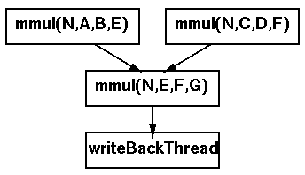

 <center> <H1>  Thread </H1> </center> <hr noshade width = 80% algn = "center"> <H2>
<LI> それぞれのNinf呼び出しに対して一つずつ
Thread を張り付ける<p>
<LI> 結果の書き戻し専用のThread を作成する<p>
<LI> Ninf呼び出し間の依存関係に基づいて、Thread間依存関係を設ける<p>

<center>

</center>

 <hr> <center><table><td><h2>　　　　　　　　　　　　　　　</td><td></td><td></td><td><h2><em>　　　　　　　HOKKE' 96 </td></table></center>

